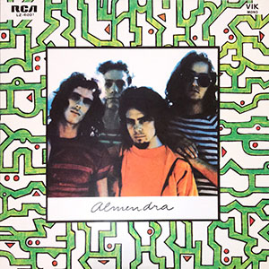

DISCOGRAFÍA
Almendra
(1969)
- Muchacha (ojos de papel)
- Color humano
- Figuración
- Ana no duerme
- Fermín
- Plegaria para un niño dormido
- A estos hombres tristes
- Que el viento borró tus manos
- Laura va

Almendra II
(1970)
Disco 1
- Toma el tren hacia el sur
- Jingle
- No tengo idea
- Camino difícil
- Rutas argentinas
- Vete de mí, cuervo negro
- Aire de amor
- Mestizo
- Agnus Dei
Disco 2
- Parvas
- Cometa azul
- Florecen los nardos
- Carmen
- Obertura
- Amor de aire
- Verde llano
- Leves instrucciones
- Los elefantes
- Un pájaro te sostiene
- En las cúpulas

Spinettalandia y sus amigos
(1971)
- Castillo de piedra
- Ni cuenta te das
- Tema de Pedro
- Dame, dame pan
- Estrella
- La búsqueda de la estrella
- Vamos al bosque
- Era de tontos
- Alteración del tiempo
- Descalza camina
- Lulú toma el taxi

Desatormentándonos
(1972)
- Blues de Cris
- El jardinero (temprano amaneció)
- Dulce 3 nocturno
- El monstruo de la laguna
- Serpiente (viaja por la sal)
- Me gusta ese tajo
- Despiértate nena
- Post-crucifixión
Pescado 2
(1973)
Disco 1
- Panadero ensoñado
- Iniciado del alba
- Poseído del alba
- Como el viento voy a ver
- Viajero naciendo
- Mañana o pasado
- Nena boba
- Madre-selva
- Peteribí
Disco 2
- 16" de Peteribí
- Señorita
- Credulidad
- ¡Hola, pequeño ser!
- Mi espíritu se fue
- Sombra de la noche negra
- La cereza del zar
- Corto
- Cristálida

Artaud
(1973)
- Todas las hojas son del viento
- Cementerio Club
- Por
- Superchería
- La sed verdadera
- Cantata de puentes amarillos
- Bajan
- A Starosta, el idiota
- Las habladurías del mundo
Invisible
(1974)
- Jugo de lúcuma
- El diluvio y la pasajera
- Suspensión
- Tema de Elmo Lesto
- Azafata del tren fantasma
- Irregular
- La llave del Mandala
- Lo que nos ocupa es esa abuela, la conciencia que regula el mundo
- Elementales leches
- Estado de coma
- Oso del sueño
- Viejos ratones del tiempo
Durazno sangrando
(1975)
- Encadenado al ánima
- Durazno sangrando
- Pleamar de águilas
- En una lejana playa del animus
- Dios de la adolescencia
El jardín de los presentes
(1976)
- El anillo del Capitán Beto
- Los libros de la buena memoria
- Alarma entre los ángeles
- Que ves el cielo
- Ruido de magia
- Doscientos años
- Perdonado (niño condenado)
- Las golondrinas de Plaza de Mayo

A 18' del sol
(1977)
- Viento del azur
- Telgopor
- Viejas mascarillas
- A 18' del sol
- Canción para los días de la vida
- Toda la vida tiene música hoy
- ¿Dónde está el topacio?
- La eternidad imaginaria

El valle interior
(1980)
- Las cosas para hacer
- Amidama
- Miguelito, mi espíritu ha partido a tiempo
- Espejada
- Cielo fuerte (amor Guaraní)
- El fantasma de la buena suerte
- Buen día, día de sol
Almendra en Obras I
(1980)
- Ana no duerme
- Para saber cómo es la soledad
- Plegaria para un niño dormido
- Figuración
- Cambiándome el futuro
- Vamos a ajustar las cuentas al cielo
- Mestizo
Almendra en Obras II
(1980)
- Jaguar herido
- Color humano
- Hilando fino
- Muchacha (ojos de papel)
- Hermano perro
- Rutas argentinas

Alma de diamante
(1980)
- Amenábar
- Alma de diamante
- Dale gracias
- Con la sombra de tu aliado (el aliado)
- La diosa salvaje
- Digital Ayatollah
- Sombras en los álamos

Only love can sustain
(1980)
- Who's to Blame
- Only Love Can Sustain
- Love Once, Love Twice, Then Love Again
- Omens of Love
- Interlude (Jade I)
- Interlude (Jade II)
- Something Beautiful
- Children of the Bells
- George's Surprise
- Light My Eyes
- Interlude (Jade III)
Los niños que escriben en el cielo
(1981)
- Moviola
- La herida de París
- El hombre dirigente
- Sexo
- Siguiendo los pasos del maestro
- Contra todos los males de este mundo
- Un viento celeste
- No te busques ya en el umbral
- Influjo estelar
- Nunca me oiste en tiempo

Kamikaze
(1982)
- Kamikaze
- Ella también
- Águila de trueno Parte I
- Águila de trueno Parte II
- Almendra
- Barro tal vez
- ¡Ah, basta de pensar!
- La aventura de la abeja reina
- Y tu amor es una vieja medalla
- Quedándote o yéndote
- Casas marcadas

Mondo di cromo
(1983)
- Paquidermo de luxe
- Yo quiero ver un tren
- La rifa del viento
- Herido por vivir
- Simil bahion
- Cuando vuelva del cielo
- Lo siento en mi corazón
- Será que la canción llegó hasta el sol
- Días de silencio
- El bálsamo
- Para valen
- No te alejes tanto de mí
- Tango cromado
Bajo Belgrano
(1983)
- Canción de Bajo Belgrano
- Vas a iluminar la casa
- Maribel se durmió
- Vida siempre
- Ping pong
- Mapa de tu amor
- Resumen porteño
- Era de uranio
- Cola de mono
- Viaje y epílogo

Madre en años luz
(1984)
- Camafeo
- Entonces es como dar amor
- Amarilla flor
- Este es el hombre de hielo
- No ves que ya no somos chiquitos?
- Ludmila
- Enero del último día
- Mula alma
- Díganle
Privé
(1986)
- Alfil, ella no cambia nada
- Una sola cosa
- Ropa violeta
- Como un perro
- Pobre amor, llámenlo
- No seas fanática
- La mirada de Freud
- Patas de rana
- Ventiscas de marzo
- La pelícana y el androide
- Rezo por vos

La la la
(1986)
- Folis Verghet
- Instant-Táneas
- Tengo Un Mono
- Retrato de Bambis
- Asilo de Tu Corazón
- Dejaste Ver Tu Corazón
- Sólo La La La
- Gricel
- Serpiente de Gas
- Todos Estos Años de Gente
- Carta Para Mí Desde el 2086
- Jabalíes - Conejines
- Parte del Aire
- Cuando el Arte Ataque
- Pequeño Ángel
- Arrecife
- Estoy Antiborrado Con Tu Amor
- Un Niño Nace
- Woyseck
- Hay Otra Canción

Téster de violencia
(1988)
- Lejísimo
- Siempre en la pared
- Al ver verás
- La luz de la manzana
- El marca piel
- El mono tremendo
- Organismo en el aire
- Tres llaves
- La bengala perdida
- Alcanfor
- Parlante

Don Lucero
(1989)
- Oboi
- Fina ropa blanca
- Wendolin
- La melodía es en tu alma
- Divino presagio
- Un sitio es un sitio
- Es la medianoche
- Un gran doblez
- Cielo invertido
Exactas
(1990)
- Que ves el cielo
- Amor de primavera
- Parvas
- El marcapiel
- Frazada de cactus
- Plegaria para un niño dormido
- Sicosisne
- La cereza del zar
- Pequeño ángel
- La herida de París

Pelusón of milk
(1991)
- Seguir viviendo sin tu amor
- Lago de forma mía
- Ganges
- La montaña
- Panacea
- Domo tú
- Cada luz
- Bomba azul
- Cielo de ti
- Cruzarás
- Hombre de lata
- Jilguero
- Ella bailó (love of my life)
- Pies de atril
- Dime la forma
Fuego gris
(1993)
- Escape hacia el alma
- Yo no puedo dar sombra
- Nirvana mañana
- Verde bosque
- Preciosa dama azul
- Tocando sin sentir
- Parado en la sentina
- Cadalso temporal
- Penumbra
- Feroz canción
- Dedos de mimbre
- Trampaluz
- Caspa tropical
- Oh! Doctor
- Flecha zen
- Cordón de perfume
- Norte de nada
Spinetta y los Socios del Desierto
(1997)
Disco 1
- Cheques
- Paraíso
- Los duendes
- Sub rebaño
- Bosnia
- Luz sin freno
- Cuenta en el sol
- Diana
- Oh! Magnolia
- Luna de abril
- Se convirtió en la noche
- Tony
- Así nunca encontrarás el mar
- Cuentas de un collar
- Mi sueño de hoy
- Zonda
- La orilla infinita
Disco 2
- Nasty People
- Holanda
- La espera
- Espejo en una sombra
- Jardín de gente
- Las olas
- Jazmín
- Wasabi flash
- La luz te fue
- El rebaño del pasto
- Puyen de abril
- 2 de enero
- Cuenco de sal
- El sol y la afeitadora eléctrica
- Collar
- Duende

Estrelicia MTV Unplugged
(1997)
- Durazno sangrando
- La montaña
- Fuji
- La miel en tu ventana
- Tu nombre sobre mi nombre
- Tú vendrás a juntar mis días
- Laura va
- Jazmín
- La sed verdadera
- Barro tal vez
- Tía Amanda
- Mi sueño de hoy
- Yo quiero ver un tren
- Garopaba

San Cristóforo
(1998)
- Estas acá
- Piluso y Coquito
- Como el viento voy a ver
- Me gusta ese tajo
- San Cristóforo
- El rebaño del pastor
- Bosnia
- Ana no duerme
- Sucia estrella
- Rutas argentinas
- Viento del lugar
- Tu corazón por mi
Silver Sorgo
(2001)
- El enemigo
- El mar es de llanto
- Ni hables
- Tonta luz
- Adentro tuyo
- Llama y verás
- Abrázame inocentemente
- Esta es la sombra
- Mundo disperso
- Cine de atrás
- La verdad de las grullas
- Bahía final
Argentina Sorgo Films presenta: Spinetta Obras
(2002)
- No te busques ya en el umbral
- Ekathe I
- Don’t bother me
- El mar es de llanto
- Mi sueño de hoy
- ¿No ves que ya no somos chiquitos?
- Al ver, verás
- Sagrado tesoro
- Perdido en ti
- La verdad de las grullas
- Ana no duerme

Para los árboles
(2003)
- Sin abandono
- Cisne
- Halo Lunar
- Yo miro tu amor
- A su amor, allí
- Agua de la miseria
- Dos murciélagos
- Vidamí
- Ciénaga dorada
- Néctar
- El lenguaje del cielo
- Tu cuerpo mediodía

Camalotus
(2004)
- Buenos Aires, alma de piedra
- Crisantemo
- Nelly, no me mientas
- Aquas (Agua de la miseria remix)

Pan
(2005)
- Sinfín
- Bolsodios
- Canción de noche
- Proserpina
- No habrá un destino incierto
- Cabecita calesita
- Dale luz al instante
- La flor de Santo Tomé
- Atado a tu frontera
- Preconición
- ¡Qué hermosa estás!
- Espuma mística

Un mañana
(2008)
- La Mendiga
- Vacío sideral
- No quiere decir
- Tu vuelo al fin
- Hiedra al sol
- Canción de amor para Olga
- Un mañana
- Mi elemento
- Hombre de luz
- Preso ventanilla
- Despierta en la brisa
- Para soñar
Spinetta y las Bandas Eternas
(2010)
Disco 1
- Mi elemento
- Tu vuelo al fin
- Ella también
- No te busques ya en el umbral
- Fina ropa blanca
- La bengala perdida
- Sombras en los álamos
- Alma de diamante
- Cisne
- Al ver verás
- ¿No ves que ya no somos chiquitos?
- Cielo de ti
- Las cosas tienen movimiento
- Retrato de bambis - introducción
- Asilo en tu corazón
- Mariposas de madera
- El rey lloró
- ¿Adónde está la libertad?
Disco 2
- Té para tres
- Bajan
- Cementerio Club
- Era de Uranio
- Vida siempre
- Maribel se durmió
- Necesito un amor
- Filosofía barata y zapatos de goma
- Rezo por vos
- San Cristóforo
- Bosnia
- Durazno sangrando
- Jugo de lúcuma
- Lo que nos ocupa es la conciencia, esa abuela que regula el mundo
- Niño condenado
- Amor de primavera
Disco 3
- Hola dulce viento
- Serpiente viaja por la sal
- Credulidad
- Despiértate nena
- Me gusta ese tajo
- Post-crucifixión
- Color humano
- Fermín
- A estos hombres tristes
- Muchacha ojos de papel
- 8 de octubre
- Retoño
- Yo quiero ver un tren
- No te alejes tanto de mí

Los Amigo
(2015)
- Apenas Floto
- Iris
- El Cabecitero
- Bagüalerita
- El Gaitero
- Canción del Lugar
- Iris (acústico)
- Río como Loco

Ya no mires atrás
(2020)
- Veinte Ciudades
- Ya No Mires Atrás
- Agua de Río
- Nueva Luna, Mundo Arjo
- Merecer
- Luces y Sombras
- Diadema